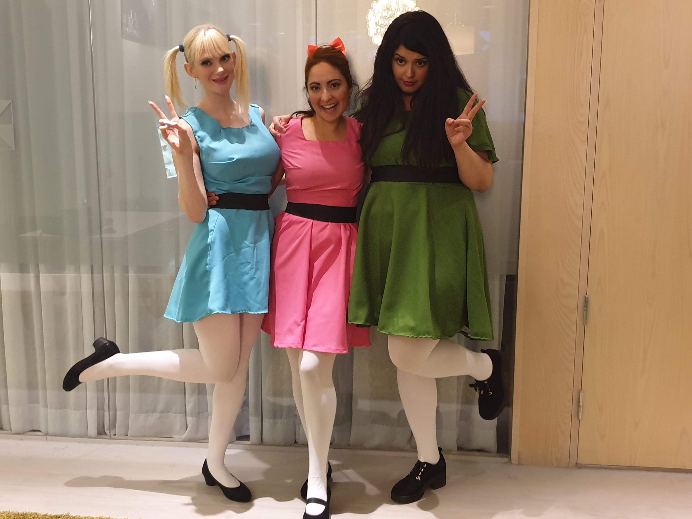
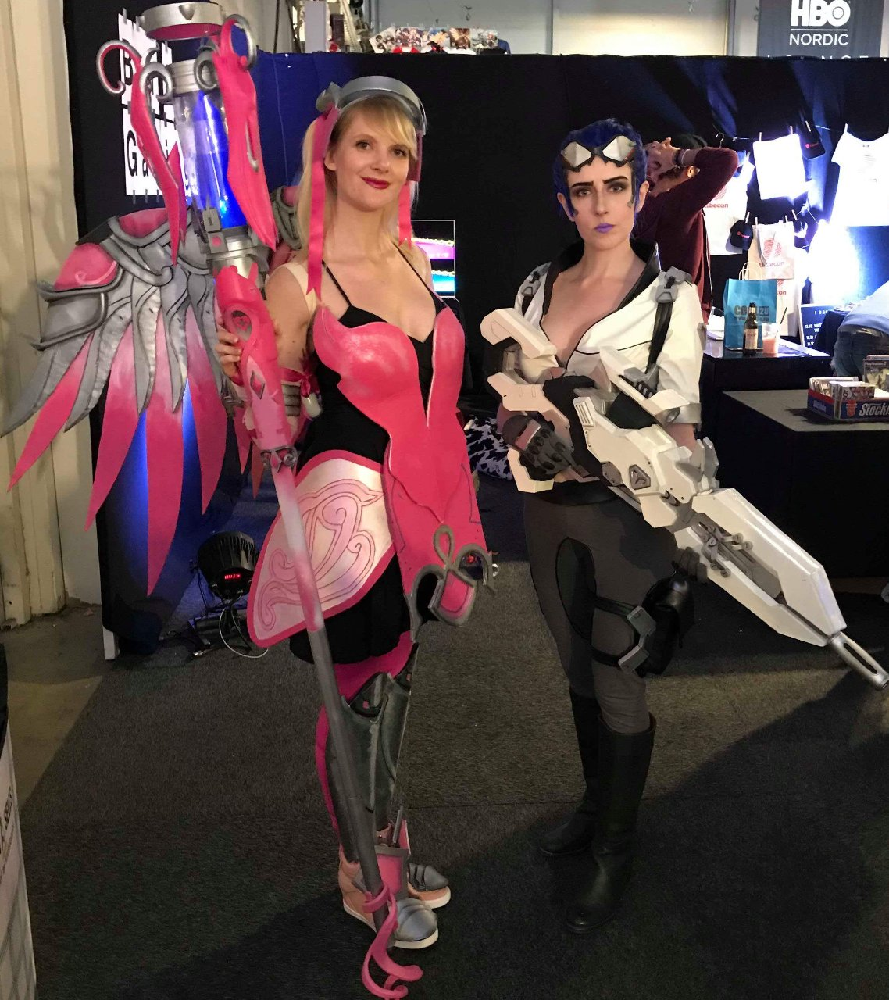

Season 2 Danaerys (long before the series got destroyed by rushed writing). This was my first cosplay and sewing project. I received a LOT of help from my amazing cosplay friend Ana, who helped me put together most of the dress, and I worked on the painting of the fabric and making the accessories and styling the top half of the dress. I wore this the first time around to Comiccon 2018, and again for Comiccon 2019.
The Powerpuff Girls! Gosh, ain't we so stinkin' cute?! My lovely friends Ana and Leslie teamed up with me to create these fun cosplays which we wore to Comiccon 2019. Fun fact: Leslie HATES pink! What a trooper!
This was my biggest project, and my first armoured cosplay. So many hours, so much blood, sweat and tears went into this thing, and in the end it was still newbie (kinda how I feel about my webpage, honestly!) I took this to Gamescom 2018 and Comiccon Stockholm 2018. Then I tore it apart wanting to rebuild it in worbla and change all the things I disliked, then life happened... one day I'll return!